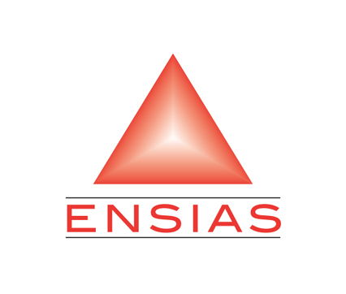
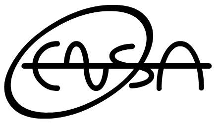

| Ecole | Noms | Descriptif Du Projet | Technologie Opensource |
|---|---|---|---|
-Zakaria AGUIGUI-Mohamed AHSSINA |
PROGRAMMATIONRéalisation de programmes informatiques développeurs qui permettent d’obtenir une meilleur utilisation en plus la creation des sites web. |
||
-Abounrarn Hassan-Kebabi Anass-Zaidouh walid |
MasjidC'est une application Mobile Android , qui permet la géolocalisation des mosquées les plus proches à l'utilisateur , ainsi que plusieurs fonctionnalités ( heure de prières .. ). |
||
|  |
-Mohammed Labrahmi-Oumaima Bouzidi |
Maroc ServicesPlatform de mise en relation entre client et prestateurs de services. |
|
|  |
-IDRISSI Khalid-LAZAAR Ilyass-HADDOUTI Khalid |
Bus M'dintiBus M'dinti est une application Android. L'objectif de cette application est de fournir des informations sur les autobus des grandes villes marocaines. Elle permet entre autres, la mise à disposition des informations concernant les stations et les lignes des villes, le calcul des itinéraires et traçage dans la carte, en temps réel et l'accessibilité aux données en mode hors connexion. C'est une application légère, grâce à l’externalisation des traitements gourmands en ressources. |
|
-BOUKHIRA ADIL |
Supervision SNMPApplication qui permet la supervision d'un ensemble de Téléphones IP. l'application a été développée pour faciliter la supervision au niveau des centres d'appels. |
||
-Yasmine TAOUS-Khalid LEHBABI |
Reseau ENSACe projet est open source utilisant des langages informatiques ,il est sous forme d'un site web qui permet d'intégrer l'ensemble des étudiants et des enseignants aussi bien les administrations des ENSA Maroc ,il se compose de plusieurs volets:1-Les nouveautés des écoles2-Les activités et les évenement des écoles3- cour,exercice,TD ou TP4-Espace des enseignants 5-Espace des étudiants6-Espace des administrations des écoles 7-Forum. |


© 2014 | Open Source ENSA Khouribga, 3ème Edition.